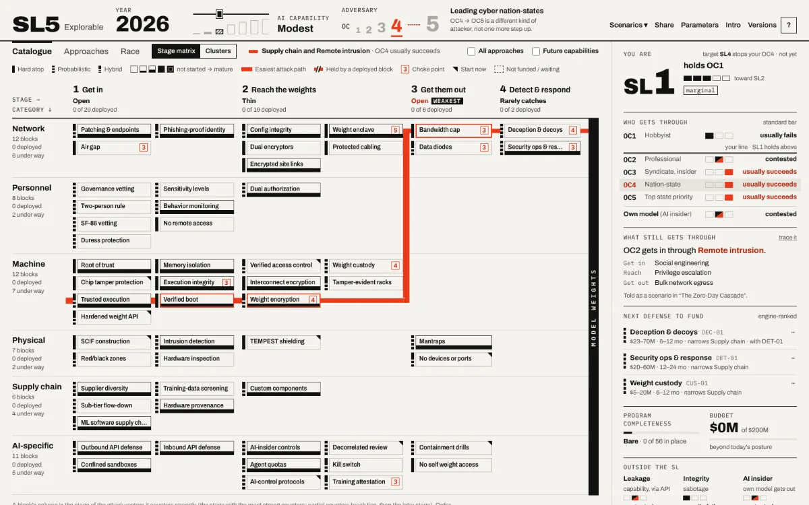
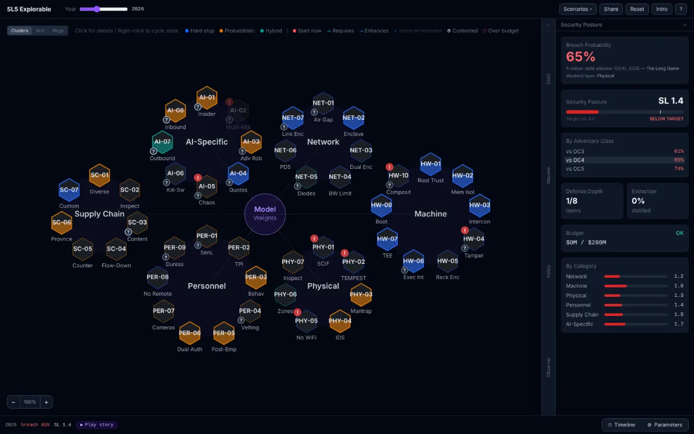

SL5 Explorable
An interactive instrument for planning how a frontier AI lab defends its model weights against nation-state attackers.
Choose a version
-
v2 Threat-relative New

Scored on RAND’s attack vectors, with a threat-relative security level: SL n means an OC n attacker usually fails. A catalogue in stage-matrix and cluster views, a verdict in words instead of percentages, approach and race views, and a new introduction for defenders.
-
v1 Original

The original 2026 build, kept for reference: a hex map of defenses, a coverage-based security level and seven narrative attack chains. Share links made before v2 open here.